| 日付 | 2026年8月6日（木） - 2026年8月10日（月） | ||||||||||
|---|---|---|---|---|---|---|---|---|---|---|---|
| 山域 | 中央アルプス | ||||||||||
| メンバー | 単独 | ||||||||||
| 山行形態 | 4泊5日避難小屋、テント泊 | ||||||||||
| アクセス | 電車、バス、タクシー | ||||||||||
| ルート (Map) |
|
2日目
5時前に出発。朝食を取った後、残りはお茶150mL。
水場まで標高差600mほどで、涼しいので問題はないだろう。
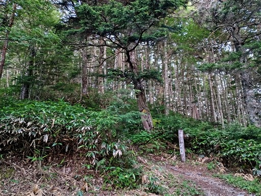
空がオレンジ色に染まっている。もうすぐ日の出だ。
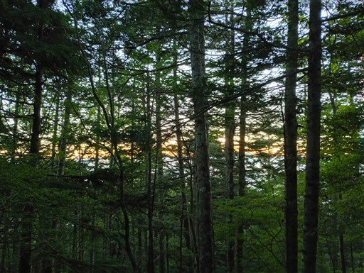
樹林帯の中で日の出を迎える。
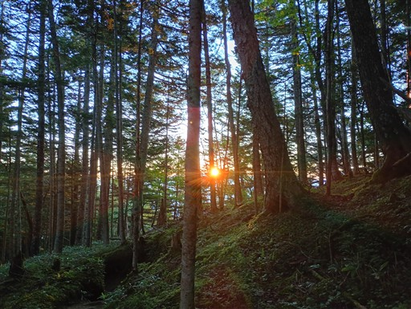
遮るものの無い稜線での日の出も良いが、こういう樹林帯の中の日の出も結構好きだ。
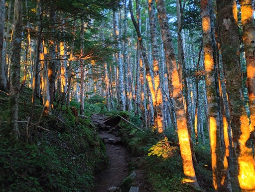
胸突八丁に到着。
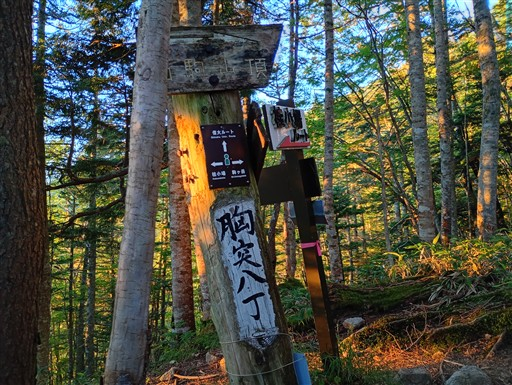
ここから傾斜がきつくなるかと思ったが、それほどでもない。
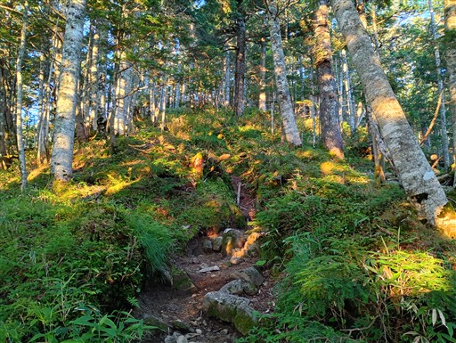
津島神社と書かれた標識があったが、大岩と木札があるのみ。
周囲を探ったが祠のようなものは見当たらない。
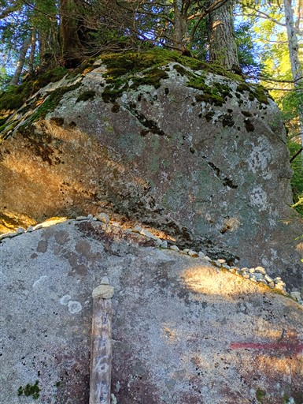
茶臼山との分岐点に到着。
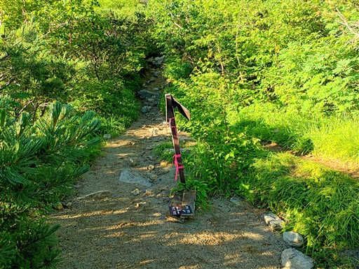
ここで一気に展望が広がる。
見えているのはもしかして、昨日標識で見た茶臼山行者岩？
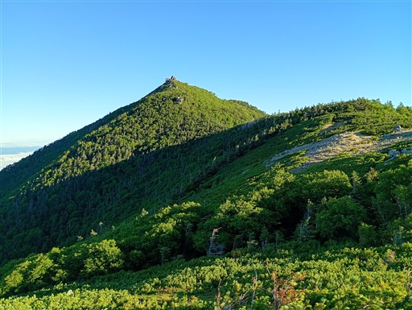
木曽側には、雲海に浮かぶ御嶽山が見える。
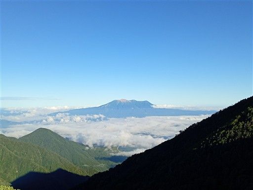
完全に森林限界の上に出た。最高の展望の稜線になる。
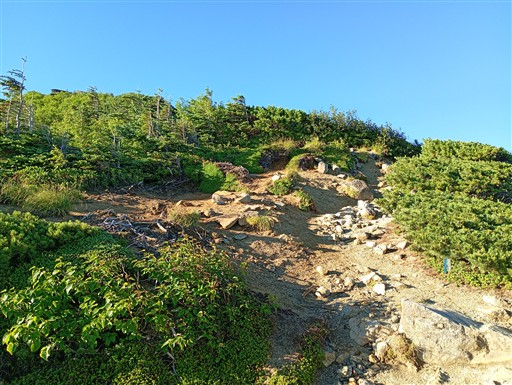
陽はもう高く登っている。どこまでも続く雲海。
その向こうに八ヶ岳と南アルプスが見えている。
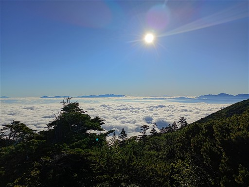
眼前に聳える木曽駒ヶ岳。
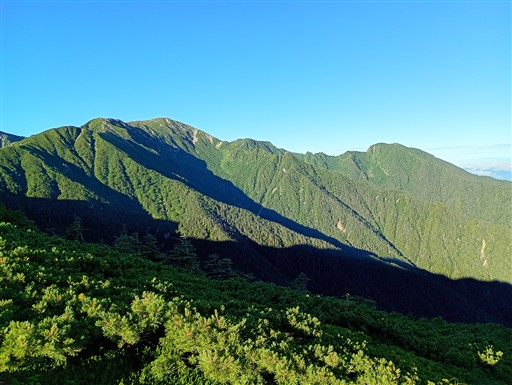
北アルプスもばっちり見えている。
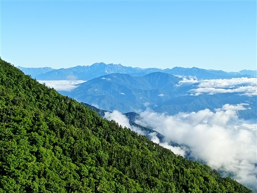
西駒山荘に到着。
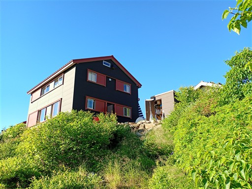
水場の標識。まだだ。まだ信用できない。
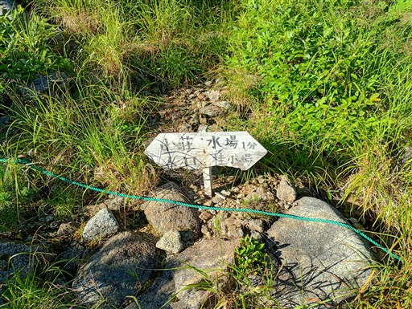
あった。冷たい水が出ている。ちょっと多めに水を汲んでおく。
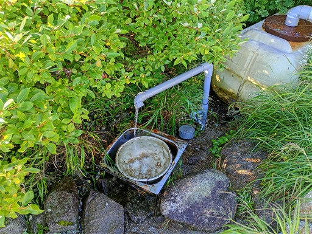
絶景が広がる小屋前の広場。ザックを置いて将棊頭山を往復する。
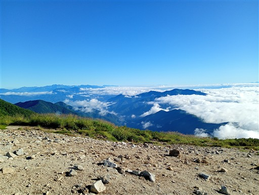
この辺りはコマクサが咲いている。解説板によると絶滅したコマクサの再生試験が行われているよう。
人の手により絶滅したものを人の手により再生させるのは自然保護と言えるのか、何とも難しい。
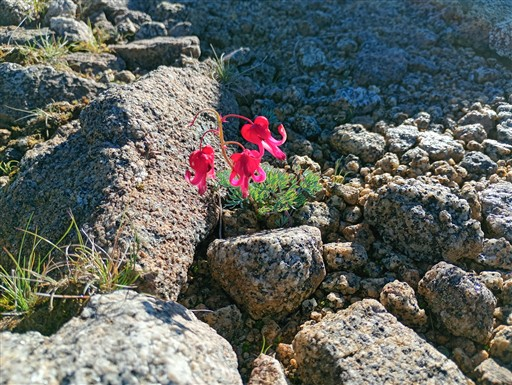
将棊頭山との分岐点。西駒山荘にザックを置いてきてしまったが、分岐点までは持ってくるべきだった。
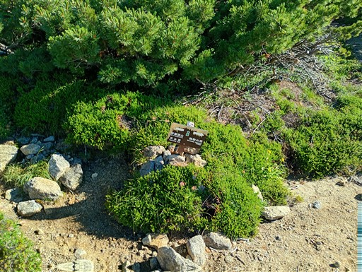
素晴らしい展望の広がる登山道だ。空身なので軽い。
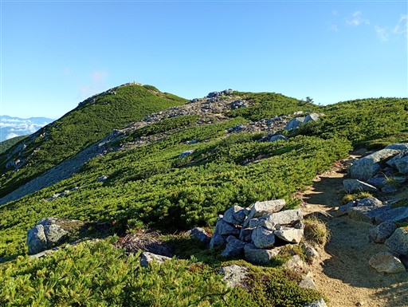
将棊頭山山頂に到着。本山行最初のピークだ。標高2730m。
今回の山行の北端ピークはこことし、この北の経ヶ岳は割愛した。間に車道が乗越しているし。
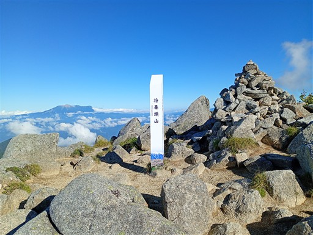
山頂からは絶景が広がる。目の前には木曽駒ヶ岳。
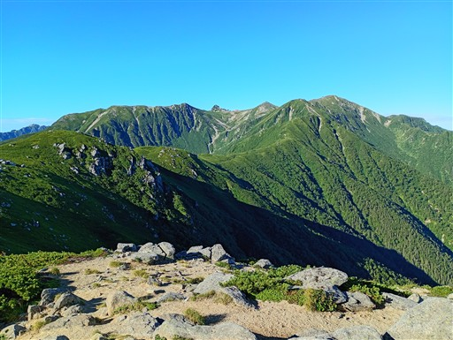
反対側は茶臼山に続く稜線と、その奥に北アルプス。
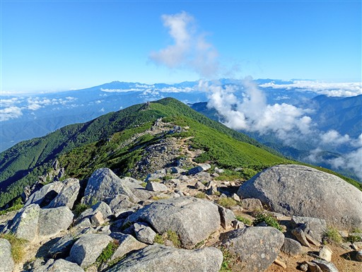
絶景を堪能したらザックを回収し、南下を開始する。
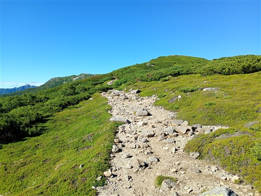
左手には南アルプスが壁のように連なっている。富士山は雲に覆われかけている。
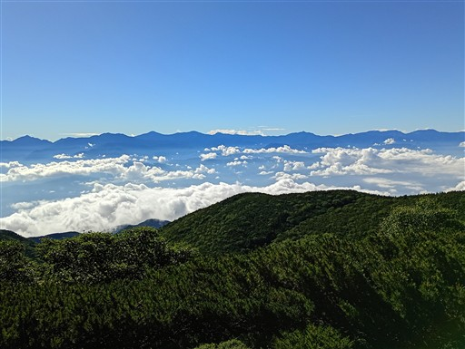
庭園のような雰囲気の場所。花崗岩の大岩が転がっている。
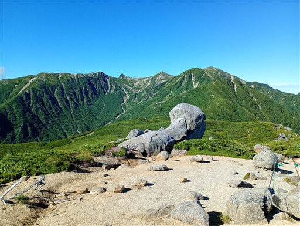
遭難記念碑。こちらは1913年に学校登山で暴風雨に合い、11名が犠牲となった時のもの。
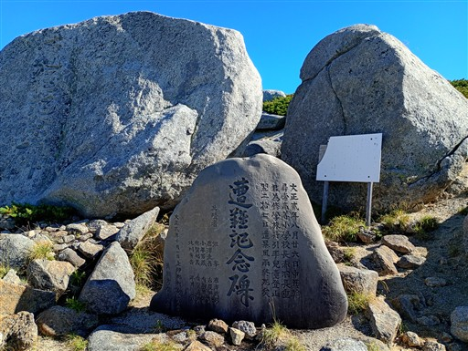
ここでボトルホルダーからボトルがすり抜けて割れ、水を失ってしまう。
今回はとことん水に嫌われる山行だ。残り1.5L。少し多めに水を持っていて助かった。
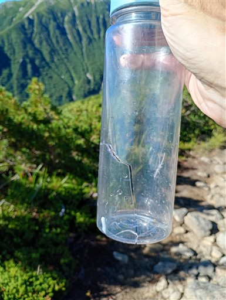
木曽駒ヶ岳は右奥。だいぶ近づいてきた。千畳敷カールも良く見える。
左下は濃ヶ池だろうか？
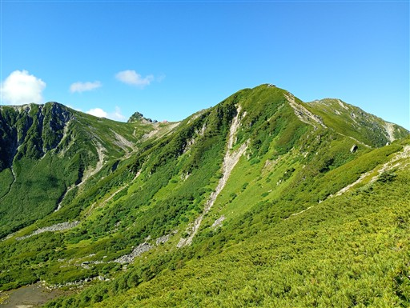
ちょっとした岩場。
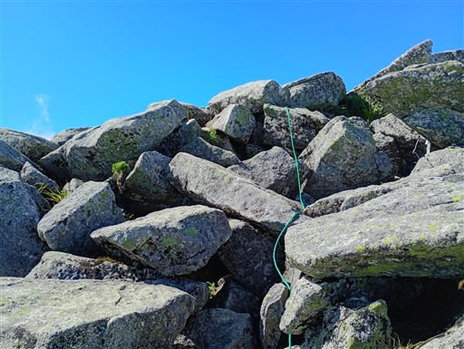
岩尾根が続く、あまり見慣れない木曽駒ヶ岳の姿。
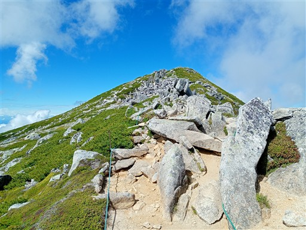
オンタデ。あまり誰にも注目されない地味な花。色の違いは雌雄の差異だ。
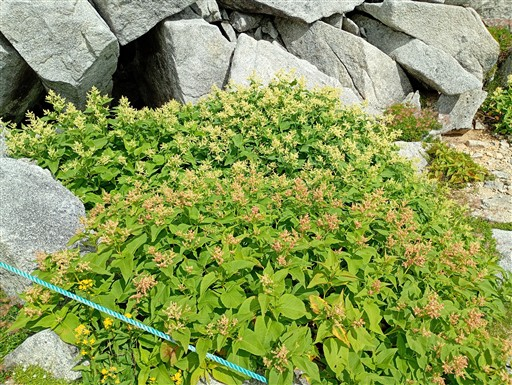
木曽駒ヶ岳の山頂に到着。標高2956m。
11年振り3度目の登頂だ。
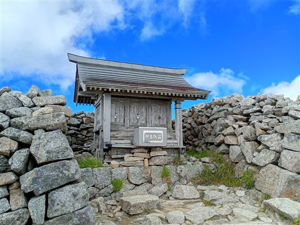
山頂はそれなりに登山者がいるが、混雑というほどではない。
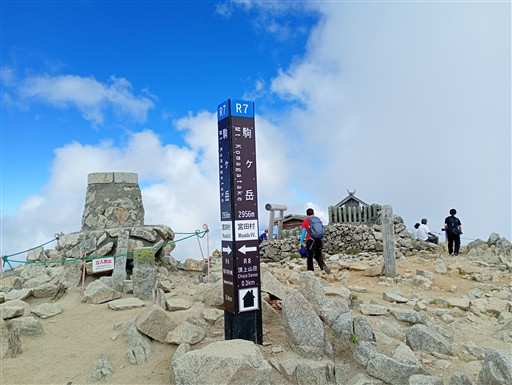
宝剣岳方面。9時になってだいぶ雲が出てきている。
過去2回は快晴で、割とこの山とは相性が良い。
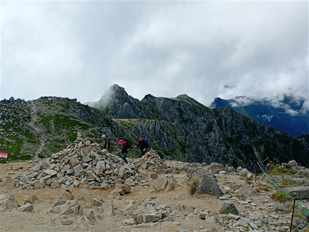
少し休憩したら中岳方面に向かう。続々と登山者が登ってくる。
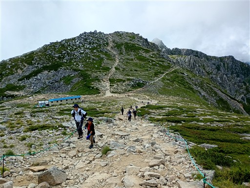
中岳山頂に到着。
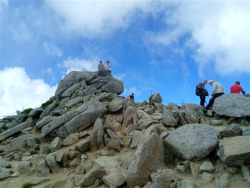
中岳を超えると宝剣岳が目の前に現れる。
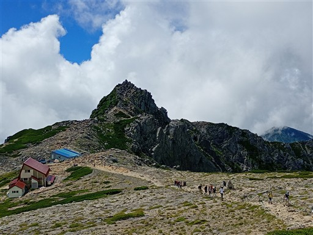
独特の形をした岩だ。右側は天狗岩。
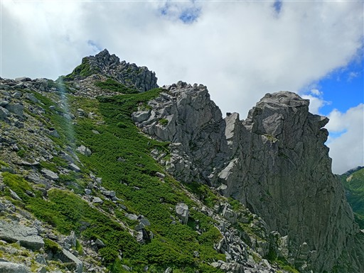
千畳敷カールへの道と分かれて、宝剣岳への登りに差し掛かる。
岩場の難易度は高くないが、とにかくザックが重い。
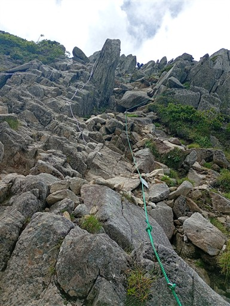
宝剣岳山頂に到着。標高2931m。
山頂の岩には、昔来た時に登った記憶がある。
誰も登らないので登ってみたら、他の人も次々と登りだした。
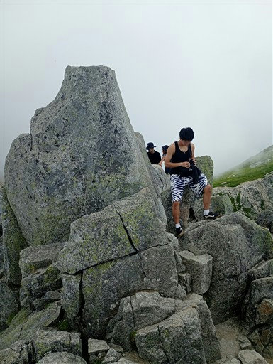
山頂にある小さな祠。
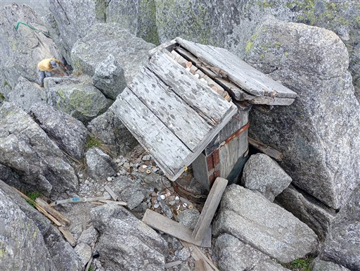
下山もかなりの岩尾根で慎重に下る。
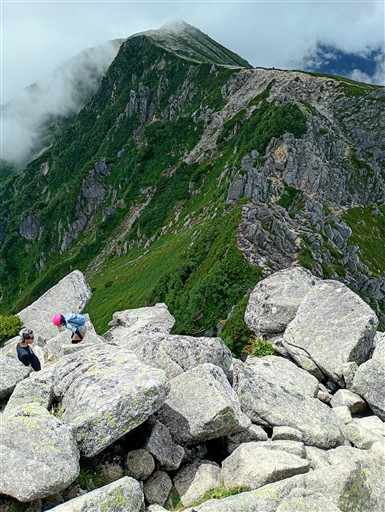
有名な岩。この上に立ったり座ったりしている写真をよく見かける。
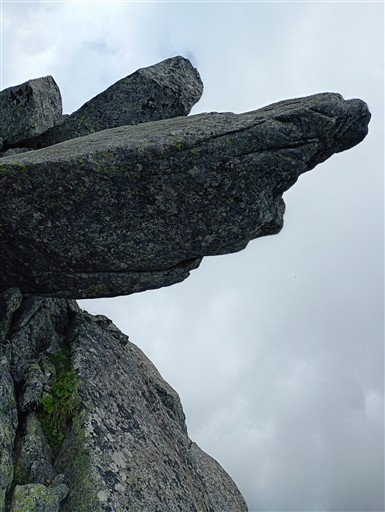
吸い込まれそうな崖が続いている。
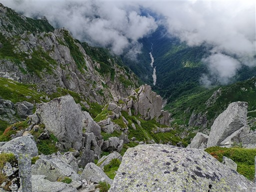
岩の下を潜る。ザックが大きいと非常に通りづらい。
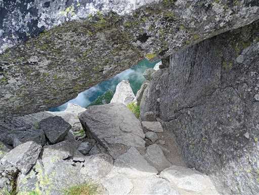
まだまだ続く岩場。
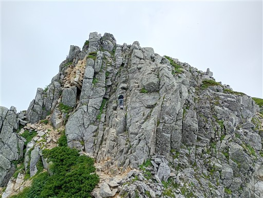
鎖などはしっかり整備されている。
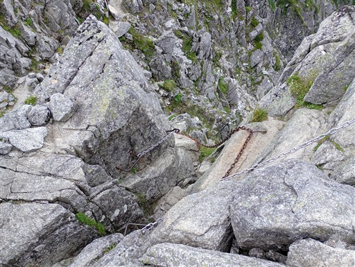
難所が終了。楽しい岩尾根だったが、ちょっとザックが重すぎた。
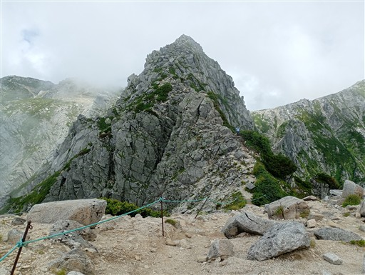
眼下にロープウェイの駅が見える。
極楽平に到着。ここから千畳敷に下りることができる。
ここで軽く休憩。
まだもう少し縦走路は続く。
島田娘と呼ばれる場所。なにが娘なのかと思ったら雪渓の形らしい。
雲に覆われて展望は広がらない。
それでも、中央アルプスらしい花崗岩の風景が得られる。
濁沢大峰を通過。
この辺りはちょっと岩場がある。決して簡単ではない稜線だ。
檜尾岳に到着。標高2728m。
稜線から外れたところに檜尾小屋が見える。
少し下ったところにテント場がある。本日の目的地だ。
檜尾小屋のテント場に到着。区画があって要予約のテント場だ。
小屋で受付を済ます。
水場までは10分。ありがたいことだ。
水場に行く途中、立派なダケカンバがある。
水場周辺にウサギギクがたくさん咲いている。
水場。細いがしっかり出ている。
本日はベーコントマト炊き込みごはん。
テント場周辺ではイブキトラノオが風に揺れている。
夕方になると少し雲が切れて、明日行く空木岳が姿を現す。
テント場では同宿の人と色々お話しできて楽しかった。